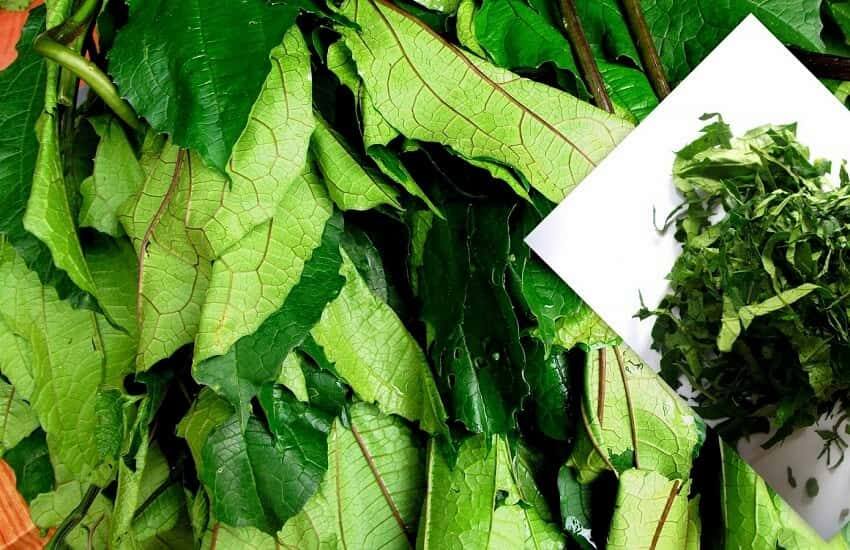
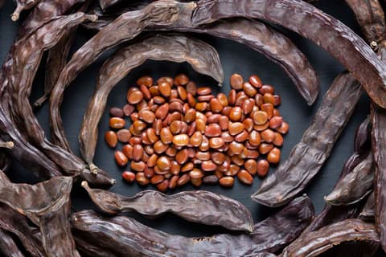
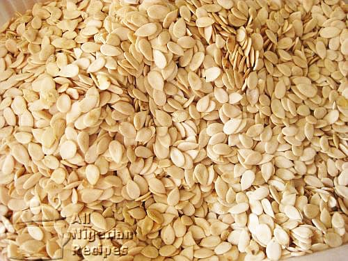

Local Ingredients
Explore Nigeria’s indigenous ingredients, their uses, and health benefits.
Ugwu (Fluted Pumpkin Leaves)
Description: A nutrient-rich leafy vegetable used in soups like egusi and vegetable stew.
Sourcing: Available in local markets or grown in home gardens.
Substitutes: Spinach or kale.
Health Benefits: High in iron, vitamins A and C, and antioxidants.
Locust Beans (Iru)
Description: Fermented seeds used to add umami flavor to soups and stews.
Sourcing: Found in markets, especially in Yoruba regions.
Substitutes: Soy sauce or miso paste (in small amounts).
Health Benefits: Rich in protein and probiotics.
Egusi (Melon Seeds)
Description: Ground seeds used to thicken and flavor soups like egusi stew.
Sourcing: Widely available in markets across Nigeria.
Substitutes: Pumpkin seeds or ground almonds.
Health Benefits: High in protein, healthy fats, and minerals.
